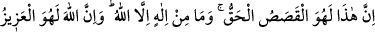
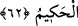
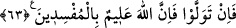

62. Şüphesiz bu (Îsâ hakkında söylenenler), doğru haberlerdir. Allah’dan başka
ilah yoktur. Muhakkak ki Allah, evet O, mutlak güç ve hikmet sahibidir.
“Şüphesiz bu” Îsâ (a.s.) ve annesinin durumu ile ilgili anlatılanlar “doğru haberdir.”
Yoksa, hıristiyanların yalanları değil. “Allah’dan başka ilah yoktur.” Hıristiyanların
“teslîs” inancını daha güçlü bir şekilde reddetmek için âyette istiğrâkiyye “min”i
kullanılmıştır. “Allah, azîz” yani mutlak galip ve “hakîmdir.” Her şeye kadirdir.
Bilinebilecek herşeyi kuşatan bir hikmet sahibidir. Hiçbir varlık, O’na güç ve hikmette
ortak olamaz ki tanrılıkta ortak olabilsin.
63. Eğer yine yüz çevirirlerse, şüphesiz Allah, bozguncuları hakkıyla bilendir.
Bu parlak ve apaçık delilleri gördükten sonra, sana anlatılan bu gerçek kıssayı ve
tevhid inancını kabul etmekten imtinâ ederlerse, şüphesiz ki Allah, bozguncuları bilir.
Kalplerindeki bozguncu emellerden haberdârdır, onları cezalandırmaya da gücü yeter.
Bil ki, peygamberlerin lânetlemeleri çok büyük bir tesiri hâizdir. Bunun sebebi ise
peygamber nefislerinin Ruhu’l-Kuds ile beraberlikleri ve Allah’ın onları Ruhu’l-Kuds
ile desteklemesidir. Bu destek, Allah’ın izniyle cismânî âlemde müessirdir. Bir bakıma
cismânî âlemin bu destekten etkilenmesi, bedenimizin ruhumuzdan etkilenerek gazap,
korku, sevinç, mâşûku düşünme, irade ve iradelerin oluşumu esnasında organları
harekete geçirme gibi yollarla ortaya çıkmasına benzer. Melekî nefislerin infiâli,
cismânî âlemle tam bir beraberlik esnasında bu âlemde icrâ ettiği tesirdir. İşte bu
birlikte oluş sebebiyle cismânî bedenler ile nâkıs insan nefisleri bu melekî nefislerin
istediği şekilde bir tepki gösterirler. Nitekim yukarıda görülmüştür ki, hıristiyanların
nefisleri Hz. Peygamber (s.a.) ile lânetleşmeden evvel onun nefsinden korkup
etkilenerek lânetleşmeden vazgeçmiş; cizye ödemek şartıyla birbirlerini kendi hâline
bırakma arzularını ızhâr etmişlerdir. et-Te’vîlâtü’l-Kâşâniyye’de böyle yazılıdır.
Velîlerin hâli de böyledir; birine bedduâ ettikleri zaman bu, hastalık, ölüm ve benzeri
belâlar şeklinde bir tesir icrâ eder.
Rivâyet edilir ki: Şâir Bisâtî, bir gün bir şâirler meclisinde Şeyh Kemâleddin el-
Hocendî’yi görür ve der ki:
Ey delikanlı sen nerdensin? Yaşlı Hocendî fevrî olarak cevap verdi. Hocend’denim,
Hocend’denim, Hocend’denim. Çünkü kendisine delikanlı denmesinden incinmişti. Yine